HL0EXM, 4500000, 192.168.0.10, 203.0.113.25 등)는 모두 예시입니다. 실제로는 본인의 값을 넣으세요.1. 준비물
| 준비물 | 설명 |
|---|---|
| Windows PC | Windows 10 또는 11 (64비트), 인터넷 연결. 오래 켜 두는 PC가 좋습니다. |
| 휴대폰 | 안드로이드 휴대폰에 DVSwitch Mobile 앱 (구글 Play 스토어에서 설치) |
| 콜사인·DMR ID | RadioID(radioid.net)에서 받은 7자리 DMR ID (예: 4500000) |
| BrandMeister 핫스팟 비밀번호 | BrandMeister 홈페이지 → SelfCare에서 정한 핫스팟 보안 비밀번호 (로그인 비밀번호와 다를 수 있습니다) |
| 보코더 플러그인 | DMR 음성을 압축·복원하는 파일(vocoder_*.dll). DVBridge에는 들어 있지 않으니 직접 구하세요. 라이선스·특허 조건도 직접 확인해 주세요. 없으면 소리 없이(무음) 동작합니다. |
| 음성 팩 (선택) | 브릿지 공지를 자연스러운 목소리로 읽어 주는 추가 기능. 없어도 됩니다 (2장 끝). |
추가로 준비할 것은 프로그램 폴더의 추가 설치 안내.txt(시작 메뉴 DVBridge → 추가 설치 안내)에도 정리돼 있습니다.
2. 설치하기
- DVBridge-0.1-setup.exe를 두 번 누릅니다. "Windows의 PC 보호" 파란 창이 뜨면 추가 정보 → 실행을 누르세요 (서명이 없는 새 프로그램이라 나오는 안내입니다). 관리자 권한 확인 창에는 예를 누릅니다.
- 라이선스 계약: "동의합니다"를 고르고 다음.
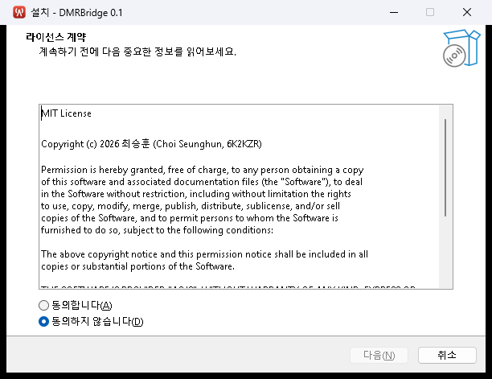
MIT 라이선스 — 누구나 자유롭게 쓰고 고칠 수 있습니다. - 설치 위치: 바꾸지 말고 그대로 다음 (
C:\Program Files\DVBridge). 이미 설치한 적이 있으면 이 단계는 나오지 않습니다. - 추가 작업: "바탕 화면에 바로 가기 만들기"를 켜 두면 편합니다.
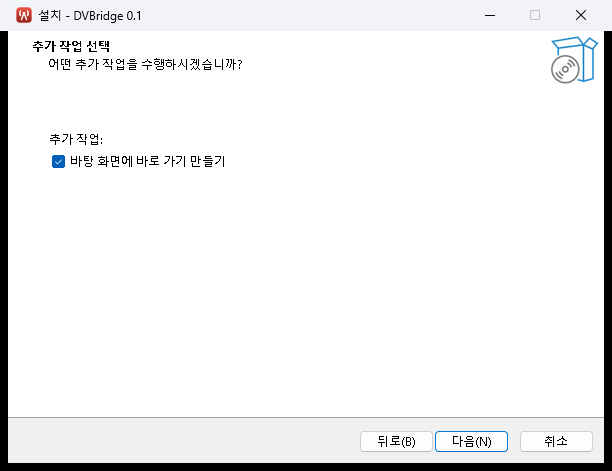
- 보코더 플러그인 (선택): 직접 구한 보코더 파일이 있으면 찾아보기로 고릅니다. 없으면 비워 두고 다음 — 나중에 넣어도 됩니다.
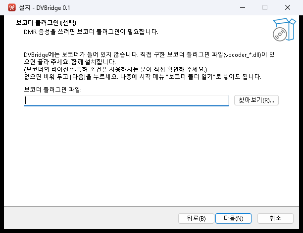
- 설치를 누르고, 끝나면 "DVBridge 실행"이 켜진 채로 마침.
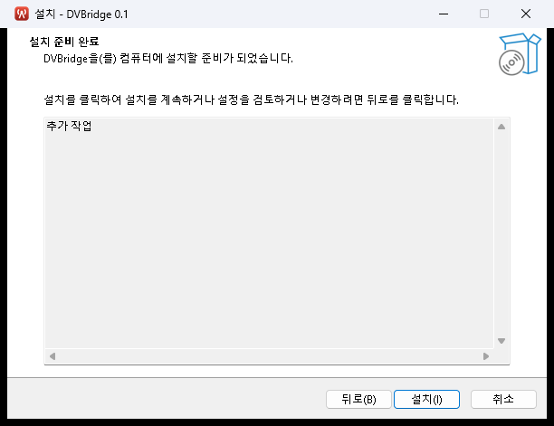
추가 설치 (보코더·음성 팩)
DVBridge 본체 말고 따로 깔아야 하는 프로그램(런타임 등)은 없습니다. 쓰는 기능에 따라 아래를 더 준비합니다.
| 무엇 | 필요할 때 | 어떻게 |
|---|---|---|
보코더 플러그인vocoder_*.dll | DMR 음성을 쓰려면 꼭 | 함께 배포하지 않으니 직접 구합니다. 설치 중 "보코더 플러그인 (선택)" 단계에서 고르거나, 나중에 시작 메뉴 → 보코더 폴더 열기(C:\Program Files\DVBridge\plugins)에 넣고 DVBridge를 다시 시작합니다. 웹 설정 "보코더" 칸에 이름과 폴더가 나오면 된 것입니다. |
| DVSwitch Mobile | 휴대폰으로 교신하려면 | 구글 Play 스토어에서 설치 (7장). |
음성 팩DVBridge-voicepack-0.1-setup.exe | 선택 — 공지를 자연스러운 목소리로 | DVBridge를 먼저 설치한 뒤 실행합니다 (약 360MB). 아래 순서. |
| RadioID 명단 | 콜사인·이름 표시 | 설치 필요 없음. 웹 설정 → ID 명단 칸의 [RadioID 명단 받기]. |
음성 팩 설치 순서
- DVBridge-voicepack-0.1-setup.exe를 두 번 누르고 관리자 권한 확인 창에 예.
- 라이선스 계약: AI 음성 모델(Supertonic 3)의 Open RAIL-M 라이선스입니다. 읽어 보고 "동의합니다"를 고른 뒤 다음. 다음 화면의 사용 제한 안내도 읽고 다음.
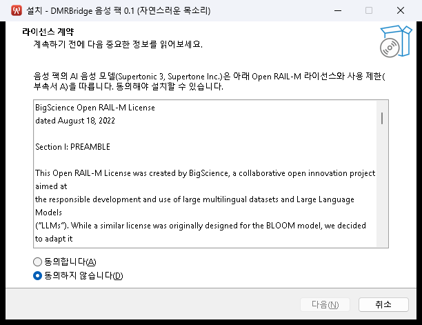
- 대상 위치: 설치된 DVBridge 폴더가 저절로 들어가 있습니다. 그대로 다음 → 설치.
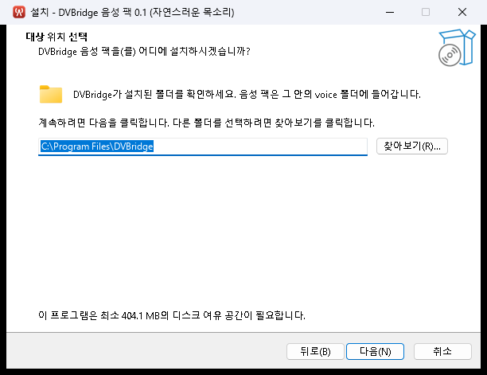
- 켜져 있던 DVBridge는 설치가 끝나면 다시 켜집니다. 목소리 고르기와 사용 제한 동의는 11장의 "자연스러운 목소리"를 보세요.
음성 팩은 따로 제거하지 않아도 DVBridge를 제거하면 함께 지워집니다.
DVBridge-0.1-win64.zip을 원하는 폴더에 풀고 DVBridge.exe를 실행하면 됩니다. 보코더 파일은 그 폴더의 plugins에 넣습니다. 음성 팩은 설치 중 "대상 위치"에서 그 폴더를 고르세요.3. 처음 실행하기
보코더 플러그인 없이 설치했다면 먼저 이런 안내가 나옵니다. OK를 누르면 됩니다 (음성 없이도 설정은 할 수 있습니다).
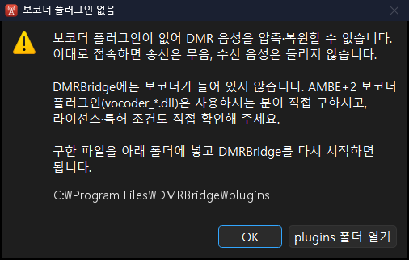
DVBridge 창입니다. 노란 상자에 처음 사용하는 순서가 나와 있습니다.
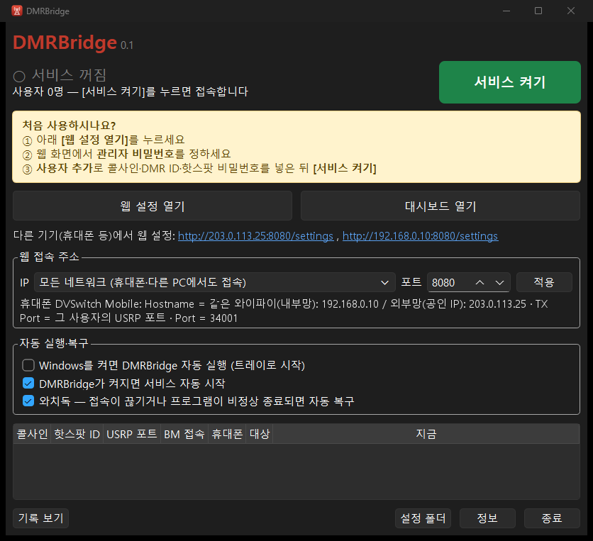
| 화면 부분 | 하는 일 |
|---|---|
| 서비스 켜기 / 끄기 | 모든 사용자의 BrandMeister 접속을 한 번에 켜고 끕니다. |
| 웹 설정 열기 | 사용자 추가·편집, TG 바꾸기, 백업, 명단 받기 등 모든 설정을 브라우저에서 합니다. |
| 대시보드 열기 | 지금 누가 송신·수신 중인지, 이력, 실시간 듣기를 봅니다. |
| 웹 접속 주소 | "모든 네트워크"면 같은 와이파이의 휴대폰에서도 웹 설정·대시보드를 열 수 있습니다. 아래 줄에 휴대폰 앱에 넣을 PC 주소가 나옵니다. |
| 자동 실행·복구 | Windows를 켜면 자동 실행, 프로그램이 켜지면 서비스 자동 시작, 와치독(자동 복구). |
4. 관리자 비밀번호 정하기
- DVBridge 창에서 [웹 설정 열기]를 누릅니다. 브라우저가 열립니다.
- 새 비밀번호(6자 이상)를 두 번 넣고 정하기를 누릅니다.
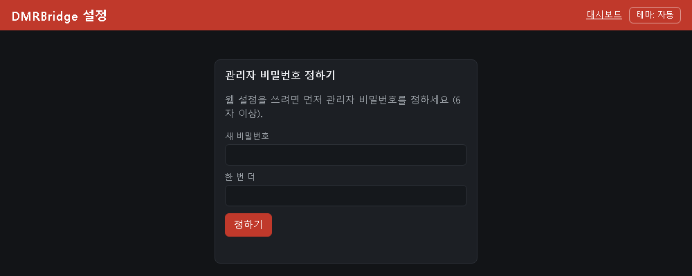
다음부터는 이 화면에서 로그인합니다.
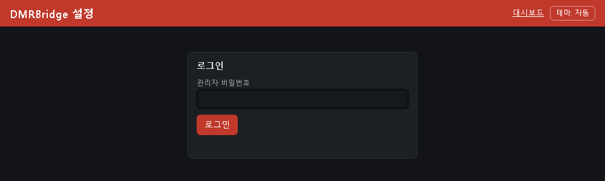
5. 사용자 추가하기
웹 설정의 사용자 칸에서 [+ 사용자 추가]를 누르면 입력 칸이 열립니다.
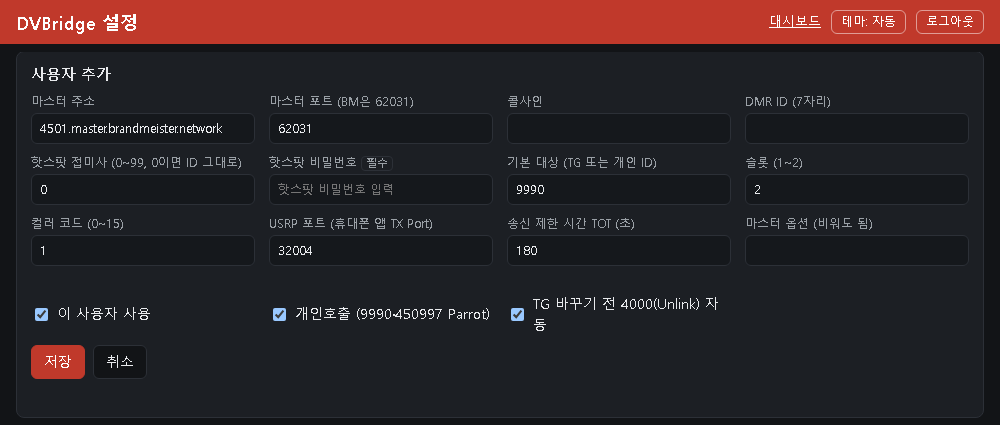
| 칸 | 넣을 값 | 예시 |
|---|---|---|
| 마스터 주소 | BrandMeister 한국 마스터 (그대로 두면 됩니다) | 4501.master.brandmeister.network |
| 마스터 포트 | BrandMeister는 항상 62031 (사용자가 여러 명이어도 모두 같음) | 62031 |
| 콜사인 | 본인 콜사인 | HL0EXM |
| DMR ID | RadioID에서 받은 7자리 번호 | 4500000 |
| 핫스팟 접미사 | 01~99. 같은 콜사인으로 여러 대를 쓰면 서로 다르게 (핫스팟 ID = DMR ID + 접미사) | 1 → 핫스팟 ID 450000001 |
| 핫스팟 비밀번호 | BrandMeister SelfCare의 핫스팟 보안 비밀번호. 저장 후에는 화면에 다시 나오지 않습니다 ("저장됨"으로 표시). | ●●●●●● |
| 기본 대상 | 서비스를 켰을 때 처음 연결할 TG. 9990이나 450997(에코)은 개인호출로 자동 설정됩니다. | 9990, 450 |
| USRP 포트 | 휴대폰 앱의 TX Port와 같은 번호. 사용자마다 서로 다르게 (자동으로 제안됩니다) | 32001, 32002 |
| 슬롯·컬러 코드·TOT·옵션 | 보통 바꾸지 않아도 됩니다 | 2 · 1 · 180초 · (빈 칸) |
저장을 누르면 목록에 나타납니다. 여러 명을 쓰려면 같은 방법으로 더 추가합니다.
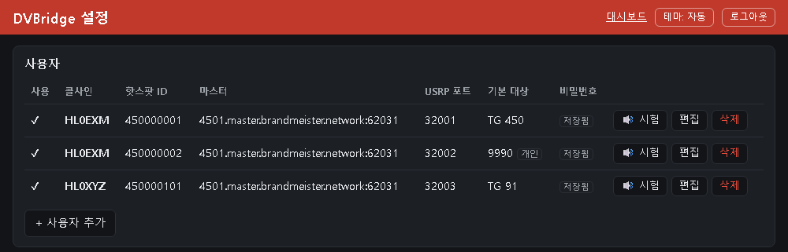
6. 서비스 켜기
DVBridge 창의 초록 [서비스 켜기]를 누르면 (또는 웹 설정 맨 위 [서비스 켜기]) BrandMeister에 접속합니다. 아래 표의 BM 접속이 초록 "접속됨"이 되면 성공입니다.
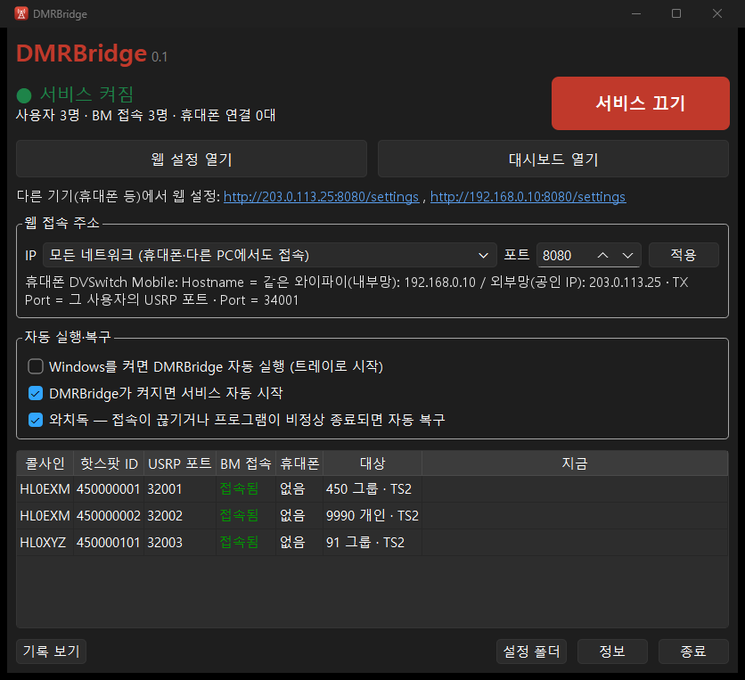
7. 휴대폰(DVSwitch Mobile) 설정
- 휴대폰과 PC를 같은 와이파이에 연결합니다. (밖에서 쓰는 방법은 13장)
- DVSwitch Mobile 앱을 열고 위쪽 Accounts를 누른 뒤, 첫 줄을 눌러 편집합니다.
- 아래처럼 넣고 Save를 누릅니다.
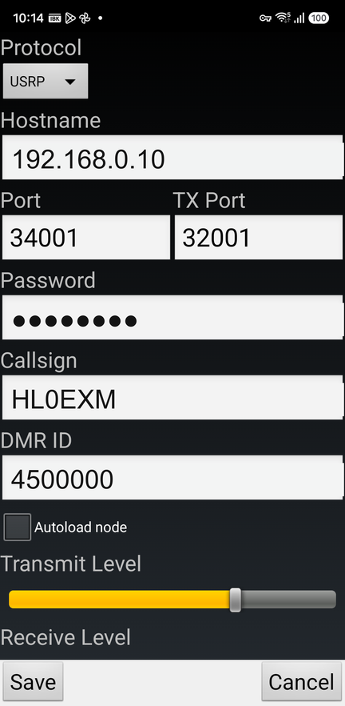
칸 넣을 값 예시 Protocol USRP USRP Hostname PC 주소 — DVBridge 창의 "웹 접속 주소" 아래 줄 "같은 와이파이(내부망)" 주소 192.168.0.10Port 휴대폰 쪽 포트 (그대로) 34001TX Port 그 사용자의 USRP 포트 (5장에서 정한 번호) 32001Password USRP 방식에서는 쓰지 않음 (아무 값이나 그대로) Callsign / DMR ID 본인 콜사인과 DMR ID HL0EXM/4500000 - Accounts 목록에서 방금 계정의 체크 상자가 켜져 있는지 확인하고 뒤로 갑니다.
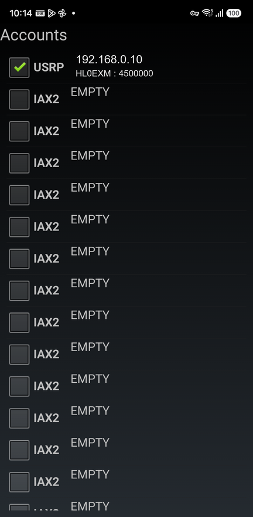
- Status를 눌러 "Registration: Registered", "Connection: USRP"가 나오면 연결된 것입니다. DVBridge 창의 휴대폰 칸에도 휴대폰 주소와 (내부망)이 나타납니다.
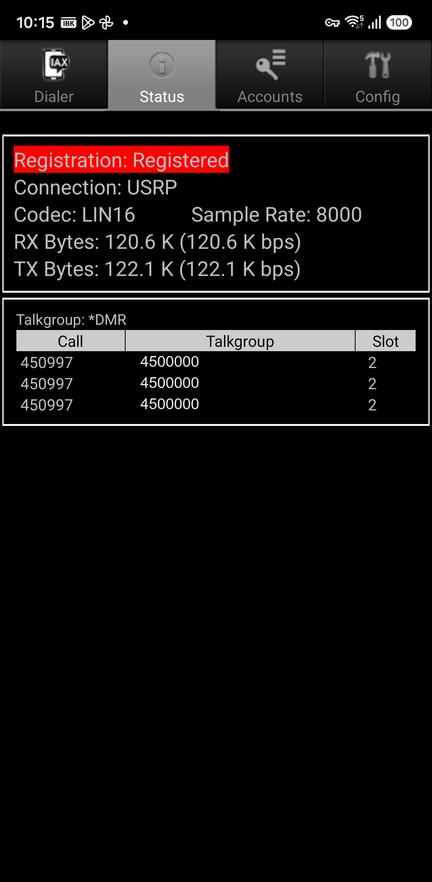
8. 에코 시험과 TG 바꾸기
에코(Parrot) 시험
- 앱의 Dialer 화면에서 450997#을 누르고 Send.
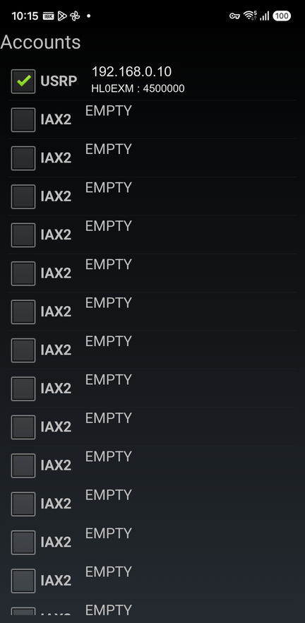
- 아래 PTT를 누른 채 3~5초 말하고 뗍니다.
- 2~3초 뒤 내 목소리가 그대로 돌아오면 성공입니다.
TG 바꾸기
휴대폰에서 번호 뒤에 #을 붙여 Send하면 바뀝니다 (예: 450# 한국, 91# 전세계). 바꾸기 전에 이전 TG 연결은 자동으로 끊습니다(4000 Unlink). 최근 15분 안에 소리가 들어온 TG도 함께 끊습니다.
지금 채널만 듣기(기본 켬): BM은 전에 말했던 TG나 SelfCare에 고정한 TG의 소리를 계속 보내 줍니다. DVBridge는 지금 고른 채널의 소리만 휴대폰으로 보내고 나머지는 거릅니다. 내 ID로 오는 개인호출, 공지, 내부 채널, 에코는 항상 들립니다. 웹 설정 TG 바꾸기 칸 아래에서 끌 수 있습니다.
웹 설정에서도 사용자마다 TG를 바꿀 수 있습니다. 번호를 넣고 바꾸기를 누르거나, 자주 쓰는 TG 버튼을 누르세요. "기본값으로도 저장"을 켜면 다음에 서비스를 켤 때도 그 TG로 시작합니다.
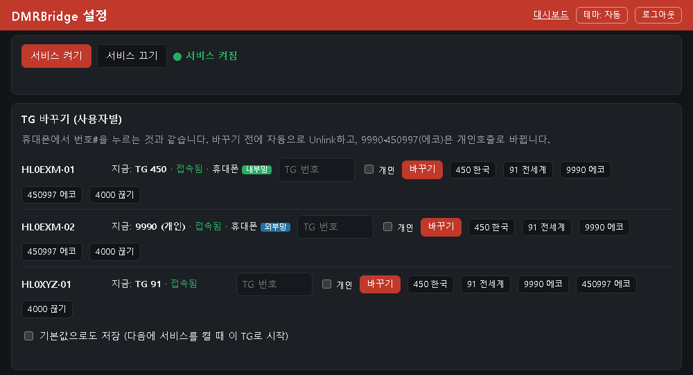
9. 대시보드 보기
DVBridge 창의 [대시보드 열기] (또는 휴대폰 브라우저에서 http://PC주소:8080). 로그인 없이 누구나 볼 수 있습니다.
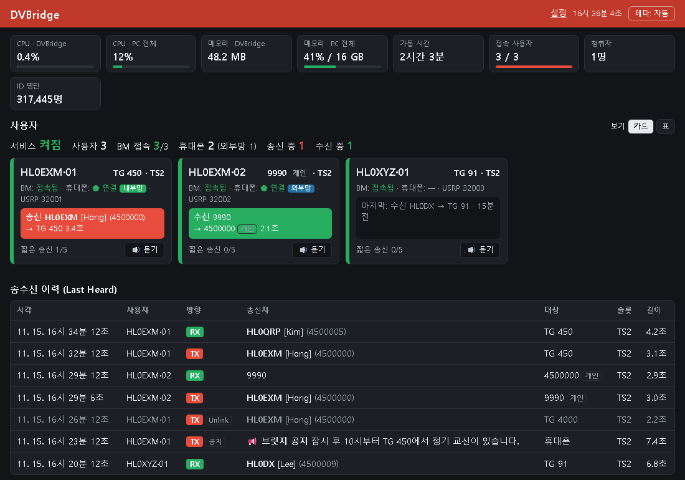
- 🔊 듣기: 그 사용자의 송수신 음성을 브라우저에서 실시간으로 들을 수 있습니다.
- 보기: 카드 / 표: 보기 방식을 바꿉니다. 테마 버튼으로 밝게/어둡게를 고를 수 있습니다.
- 위쪽 칸에는 PC의 CPU·메모리 사용량과 가동 시간이 나옵니다. 아래는 송수신 이력(Last Heard)입니다.
10. 웹 설정 둘러보기
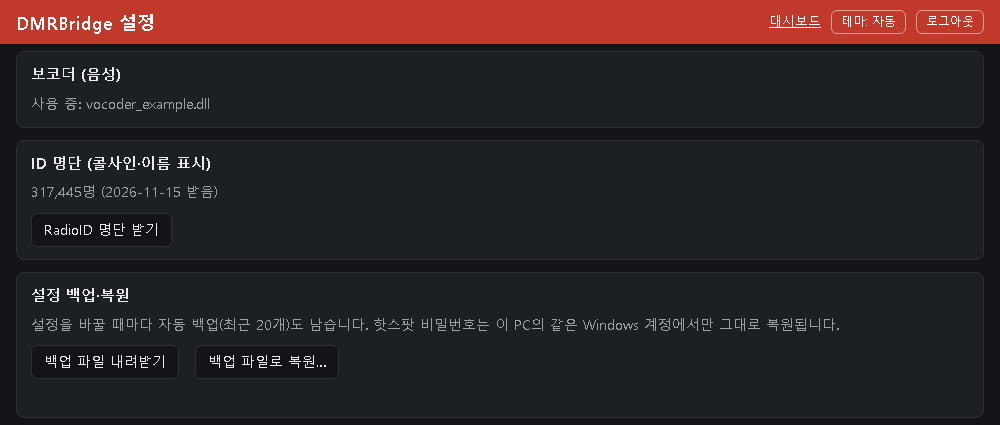
- 보코더 (음성): 플러그인이 있는지 보여 줍니다. 없으면 넣을 폴더를 알려 줍니다.
- ID 명단: [RadioID 명단 받기]를 누르면(약 17MB) 이력에 DMR ID 대신 콜사인·이름이 나옵니다. 한 달에 한 번쯤 새로 받으면 좋습니다.
- 설정 백업·복원: 아래 15장.
- 관리자 비밀번호 바꾸기: 현재 비밀번호와 새 비밀번호를 넣습니다. 바꾸면 다른 기기의 로그인은 모두 끊깁니다.
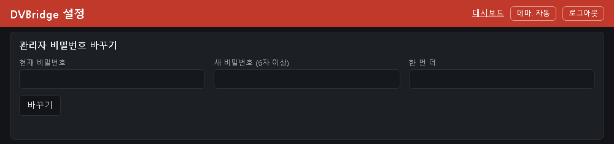
11. 브릿지 공지 (휴대폰에 음성 안내)
웹 설정의 브릿지 공지에서 이 브릿지에 접속한 휴대폰에 음성으로 안내할 수 있습니다. BM으로는 나가지 않고 휴대폰에만 들립니다.
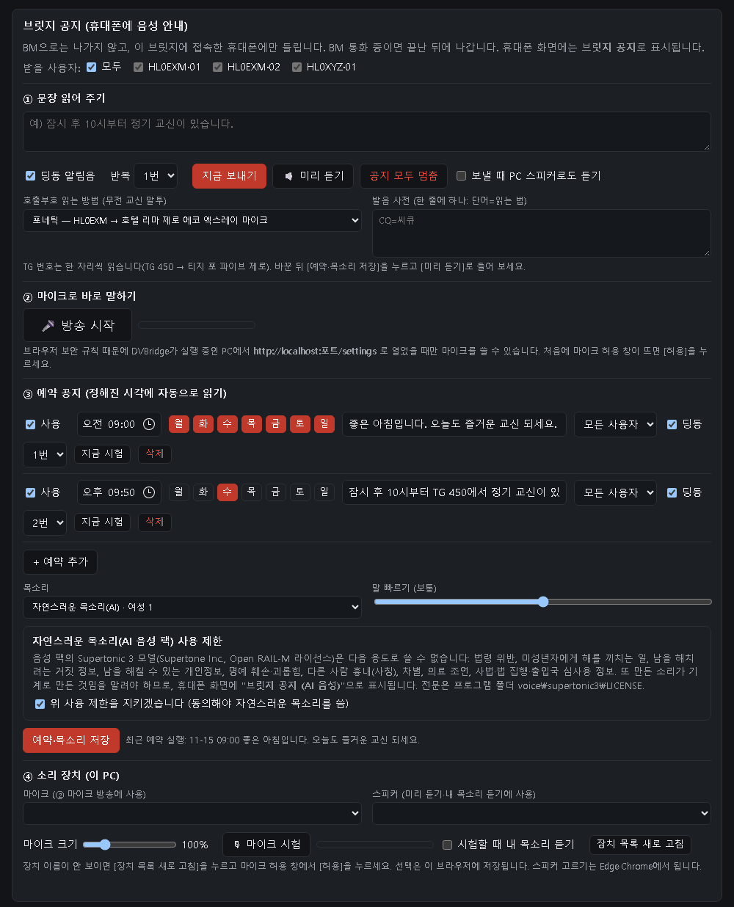
- 문장 읽어 주기: 안내할 문장을 쓰고 [지금 보내기]. Windows에 들어 있는 한국어 목소리로 읽어 줍니다. 앞에 "딩동" 알림음을 넣을지, 몇 번 반복할지 고를 수 있습니다.
- 마이크로 바로 말하기: [🎤 방송 시작]을 누르고 말한 뒤 [■ 방송 끝]. 처음 한 번은 브라우저가 마이크를 써도 되는지 물으면 [허용]을 누르세요. 브라우저 보안 규칙 때문에 DVBridge가 실행 중인 PC에서 연 웹 설정(DVBridge 창의 [웹 설정 열기])에서만 됩니다.
- 예약 공지: [+ 예약 추가] → 시각·요일·문장·받을 사용자를 정하고 [예약·목소리 저장]. 그 시각이 되면 자동으로 읽어 줍니다. [지금 시험]으로 미리 들어 볼 수 있습니다.
- BM에서 다른 분의 음성이 들어오거나 휴대폰으로 송신 중이면 끝날 때까지 기다렸다가 나갑니다. 공지 도중에 통화가 끼어들면 멈췄다가 이어서 보냅니다.
- 휴대폰 화면에는 브릿지 공지로 표시됩니다. 음성 팩의 AI 목소리로 만든 공지는 브릿지 공지 (AI 음성)으로 표시됩니다.
- 무전 교신 말투: 문장 속 호출부호는 포네틱으로(
HL0EXM→ 호텔 리마 제로 에코 엑스레이 마이크), TG 번호는 한 자리씩(TG 450 → 티지 포 파이브 제로) 읽습니다. 읽는 방법과 발음 사전(CQ=씨큐 등)은 ① 칸 아래에서 바꿉니다. - 진행 표시: [지금 보내기]를 누르면 "음성 만드는 중(약 몇 초)" → "통화가 끝나기를 기다리는 중" → "휴대폰으로 보내는 중" 막대가 나오고, 다 보내면 ✔ 표시가 나옵니다.
- 말 빠르기: ③ 칸의 "말 빠르기" 막대로 바꿉니다. 왼쪽이 느리게, 오른쪽이 빠르게입니다. 무전으로 또박또박 들리도록 "보통"을 조금 느리게 맞춰 두었습니다. 바꾼 뒤 [예약·목소리 저장].
- ④ 소리 장치: 마이크·스피커를 고르고, 마이크 크기를 맞추고, [🎙 마이크 시험]으로 막대가 절반쯤 움직이는지 봅니다. [🔈 미리 듣기]는 휴대폰에 보내지 않고 이 PC 스피커로만 들려 줍니다. "보낼 때 PC 스피커로도 듣기"를 켜면 보내는 공지를 PC에서도 들을 수 있습니다.
- 대시보드 이력에는 공지로 남고, 🔊 듣기로 공지 소리도 들을 수 있습니다. 나가고 있는 공지를 끊으려면 [공지 모두 멈춤].
자연스러운 목소리 (음성 팩, 선택)
음성 팩은 따로 내려받는 선택 추가 기능입니다. DVBridge-voicepack-0.1-setup.exe(약 360MB)를 실행하면 설치된 DVBridge를 찾아 넣고, 사람처럼 자연스러운 한국어 목소리(여성 5·남성 5)로 읽어 줍니다. 설치 중 AI 음성 모델 라이선스에 동의해야 합니다.
- 웹 설정 → 브릿지 공지 → 목소리에서 "자연스러운 목소리(AI) · 여성 1" 등을 고릅니다.
- 아래 사용 제한 안내를 읽고 "위 사용 제한을 지키겠습니다"에 체크한 뒤 [예약·목소리 저장]. 체크하지 않으면 Windows 목소리로 읽습니다.
12. 내부 채널과 내부 시험 기능 (BM으로 안 나감)
내부 채널
같은 DVBridge에 붙은 휴대폰끼리만 이야기할 수 있는 채널입니다. BM으로는 아무것도 나가지 않습니다.
- 휴대폰 DVSwitch Mobile에서 99#을 누르면 내부 채널로 들어갑니다. (웹 설정의 TG 바꾸기 칸에서 99 내부 채널 버튼을 눌러도 됩니다)
- 내부 채널에서 PTT를 누르고 말하면, 같은 내부 채널에 있는 다른 사용자 휴대폰에서 들립니다. 듣는 사람 화면에는 말한 사람 콜사인이 나옵니다.
- BM으로 돌아갈 때는 TG 번호와 #을 누릅니다 (예: 450#).
- 번호는 웹 설정 → TG 바꾸기 → 내부 채널에서 바꿀 수 있습니다 (0이면 끔). 실제 BM TG와 겹치지 않는 번호를 쓰세요.
- BM 짧은 송신 제한(60초 안 6번)과 상관없습니다. 듣는 사람에게 BM 통화가 들어오면 BM이 먼저입니다.
- 대시보드 이력에는 내부로 남습니다.
내부 시험 기능
BM에 아무것도 보내지 않고 휴대폰과 DVBridge가 잘 되는지 확인하는 기능입니다. BM 짧은 송신 제한(60초 안 6번)에도 걸리지 않습니다.
| 기능 | 쓰는 법 | 확인할 수 있는 것 |
|---|---|---|
| 내부 에코 | 휴대폰에서 9999# → PTT를 누르고 말한 뒤 뗌 | 잠시 뒤 내 목소리가 그대로 돌아옵니다(화면 이름표 "에코 시험"). 마이크·스피커·연결 점검. 0.5초보다 짧게 말하면 돌려주지 않습니다. BM으로 돌아갈 때는 TG 번호#. |
| 시험 소리 보내기 | 웹 설정 → 사용자 목록의 [🔊 시험] | 그 사용자의 휴대폰에만 딩동과 시험 안내 음성이 갑니다. 휴대폰 화면 이름표와 소리를 확인합니다. |
| 시험 모드 | 웹 설정 → 사용자 편집 → 시험 모드에 체크 → 저장 | 그 사용자는 BM에 접속하지 않습니다. 어떤 TG로 말해도 에코로 되돌아오고, 채널 바꾸기·송신이 BM으로 나가지 않습니다. 처음 쓰시는 분의 연습용. 사용자 목록에 "시험 모드"로 표시됩니다. 실제로 쓰려면 체크를 끄고 저장하세요. |
내부 에코 번호는 웹 설정 → TG 바꾸기 → 내부 에코 번호에서 바꿀 수 있습니다 (0이면 끔). 대시보드 이력에는 에코로 남습니다.
13. 밖에서(LTE·5G) 쓰기와 네트워크 점검
웹 설정의 네트워크 점검에서 [점검하기]를 누르면 이 PC가 밖에서 접속할 수 있는 상태인지, 무엇을 해야 하는지 알려 줍니다. [공인 IP도 확인]은 외부 서비스에 이 PC의 공인 IP를 물어봅니다.
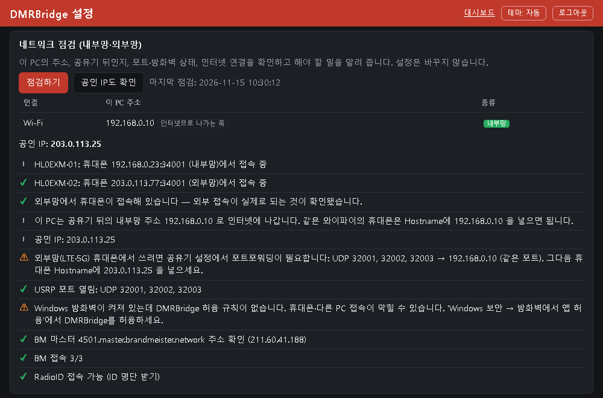
| 점검 결과 | 밖에서 쓰려면 |
|---|---|
| "공유기 뒤의 내부망 주소" (대부분의 집) | 공유기 관리 화면에서 포트포워딩: UDP 32001, 32002 … → PC 주소(예: 192.168.0.10). 휴대폰 Hostname에는 공인 IP(예: 203.0.113.25)를 넣습니다. |
| "공인 IP로 인터넷에 바로 연결" | 포트포워딩 없이 휴대폰 Hostname에 그 공인 IP를 넣으면 됩니다. |
| "Windows 방화벽 … 허용 규칙이 없습니다" | Windows 보안 → 방화벽 및 네트워크 보호 → 방화벽에서 앱 허용 → DVBridge 허용. |
밖에서 휴대폰이 붙으면 대시보드와 웹 설정에 [외부망]이 표시됩니다 — 외부 접속이 실제로 된다는 확인입니다.
14. 자동 실행·트레이·와치독
- 창을 닫으면 프로그램은 꺼지지 않고 작업 표시줄 오른쪽(트레이)의 DVBridge 아이콘으로 내려가 계속 동작합니다. 아이콘을 누르면 창이 다시 열립니다. 완전히 끝내려면 창의 [종료]나 트레이 아이콘 메뉴의 종료를 누르세요.
- Windows를 켜면 자동 실행: 켜 두면 PC를 켤 때 트레이로 자동 시작합니다.
- 서비스 자동 시작: DVBridge가 켜지면 바로 BrandMeister에 접속합니다.
- 와치독: 끊긴 접속을 15초마다 다시 켜고, 프로그램이 비정상 종료되면 3초 뒤 자동으로 다시 실행합니다.
- DVBridge를 한 번 더 실행하면 새로 뜨지 않고 이미 켜진 창이 앞으로 나옵니다.
15. 백업·업데이트·제거
- 자동 백업: 설정을 바꿀 때마다
data\backup에 최근 20개가 남습니다. - 백업 파일 내려받기 / 백업 파일로 복원: 웹 설정의 "설정 백업·복원". 복원하면 지금 설정은 자동으로 보관되고 서비스는 꺼집니다.
- 핫스팟 비밀번호는 Windows 계정 단위로 암호화되어 있어 같은 PC·같은 Windows 계정에서만 그대로 복원됩니다. 다른 PC에서는 비밀번호만 다시 넣으세요.
- 업데이트: 새 버전 설치 파일을 그대로 실행하면 됩니다. 켜져 있는 DVBridge는 자동으로 정상 종료되고, 설정(
data)과 보코더(plugins)는 그대로 남습니다. - 제거: Windows 설정 → 앱 → DVBridge 제거. 설정까지 지울지 물어보며, 기본은 "남겨 둠"입니다.
- 설정 폴더는 DVBridge 창의 [설정 폴더]나 시작 메뉴 "설정 폴더 열기"로 열 수 있습니다 (
C:\Program Files\DVBridge\data).
16. 문제가 생겼을 때
| 증상 | 확인할 것 |
|---|---|
| BM 접속이 "재시도 대기"에서 안 바뀜 | 핫스팟 비밀번호(SelfCare), DMR ID, 마스터 포트 62031. 같은 핫스팟 ID를 다른 곳에서 쓰고 있지 않은지. |
| 휴대폰 Status가 Registered가 안 됨 | Hostname(PC 주소)과 TX Port(USRP 포트)가 맞는지, 같은 와이파이인지, 서비스가 켜져 있는지. Windows 방화벽 허용 창이 떴다면 "허용". |
| 연결은 되는데 소리가 안 남 | 보코더 플러그인이 있는지 (웹 설정 → 보코더). DVBridge에는 보코더가 들어 있지 않습니다. |
| 에코가 안 돌아옴 | 450997#처럼 # 을 붙였는지, 대상이 "(개인)"으로 바뀌었는지. 9990이 응답하지 않으면 450997을 써 보세요. |
| 채널을 바꿨는데 예전 TG 소리가 들림 | 웹 설정 TG 바꾸기 칸 아래 "지금 채널만 듣기"가 켜져 있는지 확인하세요. 그래도 들리면 휴대폰에서 4000#(Unlink)을 누르세요. |
| 소리·연결이 되는지 BM 없이 확인하고 싶음 | 휴대폰에서 9999# 내부 에코, 또는 웹 설정 사용자 목록의 [🔊 시험] (12장) |
| 짧은 송신이 막힘 | BrandMeister 차단 방지 기능입니다. 1분 정도 기다렸다가 2초 이상 말하세요. |
| 웹 화면이 안 열림 | DVBridge 창의 노란 안내를 확인하고, 웹 접속 주소의 포트를 다른 번호로 바꾼 뒤 [적용]. |
| 관리자 비밀번호를 잊음 | DVBridge를 종료한 뒤 data\dvbridge.ini에서 admin_salt, admin_hash 두 줄을 지우고 다시 실행하면 새로 정할 수 있습니다. |
원인을 알기 어려우면 DVBridge 창의 [기록 보기]나 data\logs 폴더의 날짜별 기록을 확인하세요.
DVBridge — 최초 제작: 최승훈 (6K2KZR) · MIT License. Qt(LGPL v3)를 사용합니다. 이 설명서의 콜사인·DMR ID·IP 주소는 예시입니다(203.0.113.x는 문서용 예약 주소).